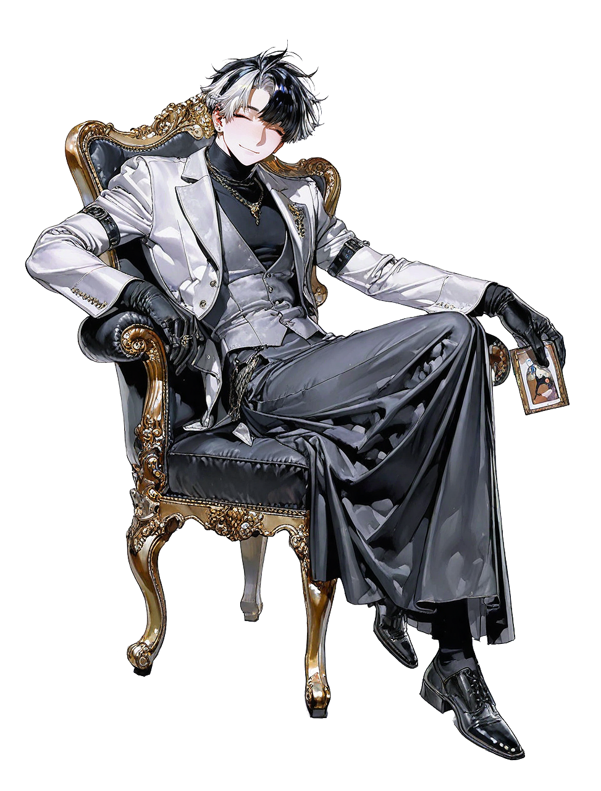

CHARACTER FILE 001 / 003NEW◆
ORPHE
ROSIER
オルフェ・ロジエ
TYPE /世界的ファッションデザイナー
SPECIESGENDER
その才能は、たった一人を美しく飾るために。

オルフェ・ロジエ
INTRODUCTION001 / CHARACTER FILE
01 / 04
NOW BROWSINGCHOOSE
YOUR CAST.03 SIGNALS DETECTED
YOUR CAST.03 SIGNALS DETECTED